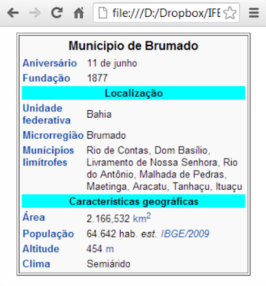
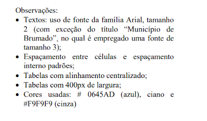

ADSPL.16 - Desenvolvimento de Sistemas Web I
Docente: Danilo Farias Soares da Silva
Discente: Thiago da Mota Vilela (20211ADSPL0140)
E-mail: tmv@discente.ifpe.edu.br - Data: 18 de maio de 2022
Avaliação - 1ª Unidade
1º) Em uma situação hipotética, um profissional de TI, deseja inserir um vídeo institucional que está no Youtube, no site da Instituição de Trabalho. Para isso, obteve o código personalizado abaixo no site do Youtube. < TAG width="560" height="315" src="https://www.youtube.com/embed/-u33KrrhlpU" frameborder="0" allow=" accelerometer; autoplay; encrypted-media; gyroscope; picture-in-picture" allowfullscreen> Tal fragmento de código (TAG) permite concluir que o comando HTML5 que deve ser utilizado na lacuna TAG é: (* 1 ponto)
{ } video
{ } movie
{ } frame
{X} iframe
{ } media
2º) Analise o trecho HTML a seguir. (* 1 ponto)
{X} com duas linhas e duas colunas.
{ } com quatro linhas e uma coluna.
{ } com quatro colunas e uma linha.
{ } com uma linha e uma coluna.
{ } com linhas e colunas desalinhadas.
3º) Um perito se deparou numa dada situação, que exigia sua análise no código HTML da figura abaixo, que também utiliza sintaxe CSS. (* 1 ponto)
{ } vermelho, cinza e verde.
{X} verde, amarelo e azul.
{ } amarelo, azul e vermelho.
{ } cinza, verde e amarelo.
{ } azul, vermelho e cinza.
Definição de cores com opacidade
ALFA
BETA
GAMA
4º) O HyperText Markup Language (HTML) é usado para estruturar páginas web. A respeito de HTML, marque V para as afirmativas verdadeiras e F para as falsas. (* 1 ponto)
(F) É uma linguagem de programação.
(F) Substitui o uso de código JavaScript.
(V) Utiliza tag para delimitar conteúdo.
(V) Possui diferentes níveis de título.
Assinale a sequência correta.
{ } V, F, F, F
{ } F, V, V, F
{ } V, V, F, V
{X} F, F, V, V
{ } V, F, V, V
5º) Em documentos HTML/XHTML, vários elementos usam os atributos padrões class, id, style e title. Um exemplo de elemento que não dispõe destes atributos é: (* 1 ponto)
{ } < i>
{ } < b>
{ } < p>
{X} < head>
{ } < input>
6º) Em uma página HTML, a declaração de tipo de documento < !DOCTYPE> deve ser a primeira instrução presente na página, antes mesmo da tag < html>. A função dessa declaração é de: (* 1 ponto)
{ } indicar que o documento possui código JavaScript associado a ele.
{X} informar ao navegador em qual versão do HTML a página foi escrita.
{ } permitir que as imagens sejam carregadas completamente antes de a página HTML ser exibida na tela do navegador.
{ } permitir que o navegador verifique se possui os complementos necessários para carregar a página, como o Flash e o Java.
{ } indicar a URL alternativa caso o documento seja acessado por um dispositivo móvel, como um smartphone.
7º) Em HTML5, ao escrever uma tabela, é possível utilizar algumas tags. Qual tag indica o início e o fim do cabeçalho da tabela? (* 1 ponto)
{ } table
{ } tbody
{ } td
{ } th
{X} thead
8º) Criar uma página HTML com CSS já na página com o layout abaixo: (* 3 pontos)


| Munícipio de Brumado |
| Aniversário |
11 de junho |
| Fundação |
1877 |
| Localização |
| Unidade Federativa |
Bahia |
| Microrregião |
Brumado |
| Munícipios Limítrofes |
Rio de Contas, Dom Basílio, Livramento de Nossa Senhora, Rio do Antônio, Malhada de Pedras, Maetinga, Aracatu, Tanhaçu, Ituaçu |
| Características geográficas |
| Área |
2.166,532 km² |
| População |
64.642 hab. est. IBGE/2009
|
| Altitude |
454 m |
| Clima |
Semiárido |